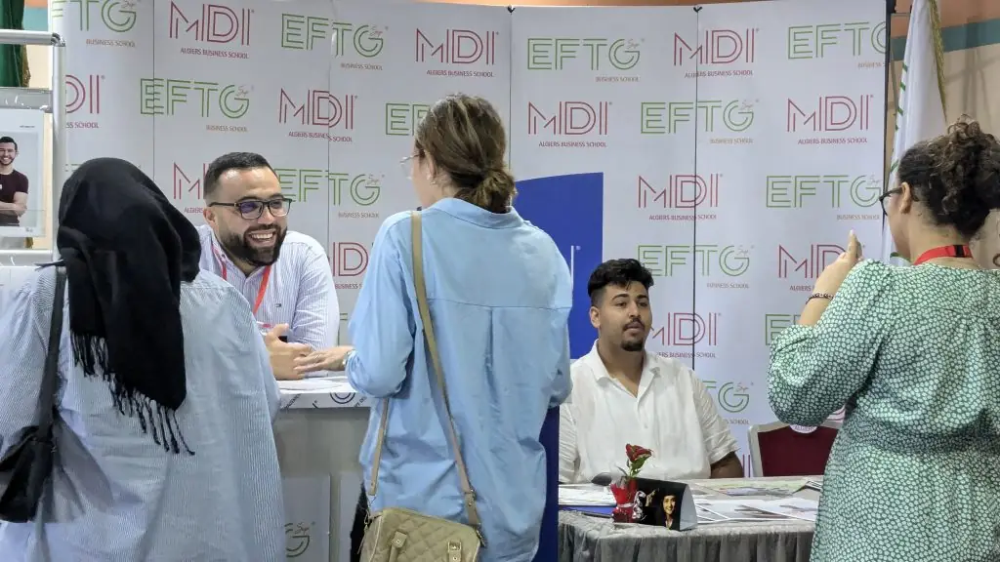

Admissions · Questions fréquentes
Admissions, frais, diplômes : vos questions.
37 réponses sur la reconnaissance des diplômes, le concours, les frais et les bourses, l’Executive Education, HEC Montréal, la vie sur le campus et les entreprises. Filtrez selon votre profil, ou cherchez un mot.
37 questions
Sept thèmes
- Programmes et reconnaissance05
- Admission et concours08
- Frais, bourses et financement06
- Executive Education06
- International03
- Vie étudiante et campus05
- Entreprises et stages04
Vous ne trouvez pas votre réponse ? Le service des admissions répond par e-mail et par téléphone.
Poser une question
Programmes et reconnaissance
Les diplômes de MDI sont-ils reconnus par l’État ?Pour les parents
Oui. MDI Algiers Business School est un établissement privé d’enseignement supérieur agréé par le Ministère de l’Enseignement Supérieur et de la Recherche Scientifique (MESRS).
Selon le ministère, les diplômés des établissements privés agréés peuvent poursuivre en second ou en troisième cycle dans un établissement public après équivalence de leur diplôme : le service des admissions vous indique l’intitulé exact du diplôme de chaque formation.
L’école est en outre certifiée ISO 9001:2015 et a reçu la 4e Palme « Top Business School » du classement Eduniversal 2025.
Quelles Licences propose MDI ?Pour les bacheliers
Quatre Licences en trois ans : Licence en Management des Entreprises ; Licence en Business Intelligence ; Licence en Informatique Appliquée & Intelligence Artificielle ; Licence en Informatique Appliquée & Sécurité Digitale. Trois d’entre elles ont ouvert à la rentrée 2025 avec le département Informatique & Intelligence Artificielle.
Quels Masters propose MDI ?Après une Licence
Cinq Masters en deux ans : Master en Management des Entreprises ; Master en Comptabilité, Contrôle et Audit ; Master en Marketing Digital & E-Business ; Master en Management Digital & Systèmes d’Information ; Master en Logistique Internationale & Supply Chain Management. Le Master Management Digital & Systèmes d’Information a ouvert en 2025-2026.
Y a-t-il des stages pendant les études ?Pour les bacheliers
Oui. Les Licences incluent un stage en entreprise dans le cursus, avec des projets concrets et un encadrement par des professionnels. En Master 2, les étudiants effectuent un stage en entreprise avant leur soutenance de fin d’études ; en 2025, les boursiers de Faderco ont fait le leur dans l’entreprise. Le Job Day de l’école met en principe chaque année les étudiants en contact avec des recruteurs.
Certains cours sont-ils en anglais ?Après une Licence
Oui. Le Master Management Digital & Systèmes d’Information dispense certains cours en anglais, pour atteindre le niveau attendu par les entreprises internationales. Le Business English figure parmi les domaines d’enseignement de l’école, et les enseignants interviennent en français et en anglais.
Admission et concours
Comment se déroule le concours d’admission en Licence ?Pour les bacheliers
Le concours comprend des épreuves écrites, puis un entretien de motivation avec le jury des admissions. Plusieurs sessions sont organisées jusqu’à la mi-septembre : en 2025, les candidats en Licence ont composé le 6 septembre, puis une seconde session s’est tenue les 13 et 14 septembre.
Les dates sont publiées dans les actualités et communiquées aux candidats préinscrits.
Comment se passe l’admission en Master ?Après une Licence
Après la préinscription, les candidats passent un test écrit de type EPAGE ; un exemple de sujet leur est envoyé pour se préparer. Un entretien individuel avec le jury d’admission porte sur le parcours, les motivations et le projet professionnel ; le calendrier et les modalités sont communiqués par le service des admissions après la préinscription. La décision du jury est ensuite communiquée par le service des admissions, et l’inscription définitive se fait auprès de lui.
En 2025, les Masters ont composé le 7 septembre, puis les 13 et 14 septembre pour la seconde session.
Puis-je intégrer un Master avec une licence obtenue dans une autre université ?Après une Licence
Oui. Les Masters sont ouverts aux titulaires d’une Licence (Bac+3) ou d’un diplôme équivalent, quel que soit l’établissement d’origine, ainsi qu’aux étudiants en dernière année de Licence. L’admission se fait sur test écrit et entretien.
Quand faut-il se préinscrire ?Pour les bacheliers
En 2026, les annonces « Inscriptions ouvertes » Licence et Master ont été publiées le 20 juillet, et les places sont limitées. Les dates 2027 seront annoncées dans les actualités de l’école ; se préinscrire tôt reste le plus sûr : vous recevez alors les dates des sessions de concours et, pour les Masters, l’exemple de sujet.
En 2026, les journées d’orientation pour les bacheliers ont eu lieu du 30 juin au 31 juillet. Rentrée : fin septembre – début octobre ; en 2025, semaine d’intégration des Licences du 30 septembre au 2 octobre et leçon inaugurale des Masters le 5 octobre.
Qu’est-ce qu’un rendez-vous d’orientation ?Pour les parents
Un entretien personnalisé avec un conseiller pédagogique, sur le campus de Chéraga, pour identifier le parcours le plus adapté au profil du candidat, découvrir les programmes, comprendre les débouchés de chaque spécialité et répondre aux questions sur les études et les inscriptions. La grille des frais y est remise.
Les parents sont les bienvenus : les journées portes ouvertes de l’école prévoient des conseils d’orientation pour les parents et les futurs bacheliers.
J’ai manqué la première session du concours : y en a-t-il une autre ?Pour les bacheliers
Oui, en général. En 2025, une seconde session a été organisée les 13 et 14 septembre pour les candidats en Licence et en Master qui n’avaient pas pu se présenter à la première session des 6 et 7 septembre. Les sessions suivantes sont annoncées dans les actualités.
Quelles pièces faut-il fournir pour le dossier ?Pour les parents
La liste des pièces à fournir est remise par le service des admissions lors de la préinscription, avec la grille des frais. Contact : academique.edu@mdi-alger.com · 0560 93 94 10 ou 0560 93 94 14.
Je suis en poste : puis-je reprendre des études en Master ?Cadres et dirigeants
Oui. Le Master en Management des Entreprises s’adresse aux diplômés universitaires, aux jeunes professionnels et aux cadres en reconversion qui souhaitent accéder à des postes stratégiques. L’admission suit la même voie que pour les autres candidats : test écrit et entretien.
Pour un diplôme compatible avec un poste, MDI Executive Education propose des MBA à temps partiel ou en blended learning (MBA International Paris, MBA spécialisés) et un doctorat (DBA) ; pour une formation plus courte, des cycles certifiants et des sessions inter-entreprises.
Frais, bourses et financement
Combien coûtent les études à MDI ?Pour les parents
MDI ne publie pas ses frais de scolarité en ligne. La grille tarifaire et les modalités de paiement vous sont présentées lors du rendez-vous d’orientation, pour la formation qui vous intéresse ; le service des admissions peut aussi vous l’envoyer sur demande.
Existe-t-il des bourses pour les bacheliers ?Pour les bacheliers
Pour la rentrée 2026, MDI a lancé, pour ses 30 ans, le programme MDI Excellence Scholarships en trois catégories (Graduates, Academic Excellence pour les Masters, Social Value). Pour la rentrée 2027, le service des admissions indique si le programme est reconduit et selon quels critères.
Repère : en 2025, les Bourses d’Excellence prenaient en charge jusqu’à 100 % des frais de scolarité pour les bacheliers ayant obtenu une moyenne d’au moins 14/20 au Bac et réussi les épreuves de sélection, avec une candidature avant le 4 septembre 2025.
Et pour les Masters ?Après une Licence
Pour la rentrée 2026, les Academic Excellence Scholarships (Master) formaient la deuxième catégorie des MDI Excellence Scholarships ; pour la rentrée 2027, le service des admissions indique si elles sont reconduites. En 2025, l’école proposait des bourses partielles ou totales aux candidats titulaires d’une Licence, avec d’excellents résultats académiques, une forte motivation et un projet professionnel clair ; la date limite était le 9 octobre 2025.
Peut-on financer les études par un prêt ?Pour les parents
Oui. Le partenariat entre MDI et Al Salam Bank, reconduit en juin 2025 (annonce du 30 juin 2025), donne accès à des prêts étudiants à taux préférentiels, à des modalités de remboursement flexibles et à un accompagnement personnalisé tout au long du parcours. Les modalités sont à voir avec Al Salam Bank Algeria ou le service des admissions.
Une entreprise peut-elle financer une bourse ?Entreprises
Oui, et plusieurs l’ont fait : Natixis Algérie a financé deux bourses d’excellence pour des candidats aux Masters en 2023, et Faderco dix bourses d’excellence pour des titulaires de Licence admis en Master ; les boursiers de Master 2 ont commencé leur stage chez Faderco le 6 février 2025.
Comment candidater à une bourse, et peut-on la cumuler ou la renouveler ?Pour les parents
Pour les bourses de la rentrée 2027, écrivez au service des admissions : admission@mdi-alger.com. En 2025, les candidatures se faisaient par un formulaire en ligne communiqué par l’école. Les règles de cumul avec une bourse d’entreprise et de renouvellement d’une année sur l’autre sont à préciser avec le service des admissions.
Executive Education
Quelles formations pour les cadres et les dirigeants ?Cadres et dirigeants
MDI Executive Education, filiale de l’école, compte 20 programmes au catalogue : le Doctorate in Business Administration (DBA), sur 36 mois (3 ans), le MBA International Paris (MBA IP), 18 mois à temps partiel, avec l’Université Paris-Dauphine | PSL et l’IAE Paris Sorbonne, dix MBA spécialisés de 12 mois (Management des entreprises, Achats & Supply Chain, Audit – Finance & Contrôle de gestion, Business Analytics & IA, Cybersécurité & Gouvernance IT, Digital Marketing, Management agroalimentaire, Management hospitalier & santé, Management des RH et RSE, Énergies renouvelables), avec CESTE (Saragosse), des programmes spécialisés (Banque – Finance – Assurance, Droit et fiscalité des entreprises, Finance islamique ; sessions à confirmer), des cycles certifiants (Certificat Administrateur d’Entreprises avec l’Institut Tunisien des Administrateurs, Essentials of MBA avec HEC Montréal, Parcours Étudiant-Entrepreneur) et des formations inter et intra-entreprises.
Frais, calendrier des sessions et brochures : sur demande auprès de l’équipe Executive Education, par le formulaire de demande.
Quel diplôme délivre le MBA International Paris ?Cadres et dirigeants
Créé en 1998 par l’IAE Paris Sorbonne Business School et l’Université Paris-Dauphine | PSL, le MBA International Paris (MBA IP) est un Executive MBA à temps partiel de 18 mois, déployé en Algérie par MDI depuis 2002. Les cours sont assurés par des professeurs des deux universités en binôme avec des professeurs de MDI, et le diplôme, délivré conjointement par les deux universités, confère le grade de master.
Comment candidater à un programme Executive ?Cadres et dirigeants
Chaque programme a sa procédure, détaillée sur sa page : Doctorate in Business Administration (DBA) – sur concours : dossier et entretien devant un jury académique ; MBA International Paris (MBA IP) – dossier, test écrit (TAAM) et entretien ; les MBA spécialisés – sur concours : étude de dossier et entretien ; Certificat Administrateur d’Entreprises – sur dossier et entretien devant un jury de 3 membres.
Déposez votre demande par le formulaire Executive Education, en précisant le programme : l’équipe vous recontacte avec la brochure, le dossier de candidature et le calendrier.
Combien coûtent les programmes Executive ?Cadres et dirigeants
Les frais ne sont pas publiés en ligne : ils sont communiqués sur demande, programme par programme, avec la brochure et le calendrier des sessions. Contact : executive.edu@mdi-alger.com · 0560 93 94 17.
Une formation sur mesure pour notre entreprise est-elle possible ?Cadres et dirigeants
L’efficacité dans le sur-mesure : conçues à partir des enjeux spécifiques de chaque organisation, les formations intra-entreprises de MDI Executive Education sont co-construites avec l’entreprise pour répondre précisément à ses besoins et à ses objectifs stratégiques. Elles vont du module ponctuel au programme personnalisé de longue durée, en entreprise ou dans les locaux de MDI.
Références : programme Préparation de la relève pour Sonatrach et ses filiales, Haut Potentiel pour Sonelgaz et ses filiales, Performance pour le groupe Cevital, Administrateur de sociétés pour les administrateurs du groupe RED-MED ; des accords ont été signés en 2025 avec AYRADE et Bel Algérie.
Comment s’inscrire à une formation inter-entreprises ?Cadres et dirigeants
Des programmes pratiques pour développer vos compétences : les formations inter-entreprises de MDI Executive Education s’adressent aux cadres souhaitant actualiser leurs connaissances et renforcer leur expertise dans un domaine précis. D’une durée de 2 à 5 jours, elles couvrent un large éventail de thématiques, et le suivi de plusieurs modules d’une même spécialité peut conduire à un Certificat en Management.
Le planning des sessions est communiqué sur demande. Inscription auprès de l’équipe Executive : executive.edu@mdi-alger.com · 0560 93 94 17.
International
Peut-on étudier à HEC Montréal après le Bac ?Pour les bacheliers
Oui, avec le parcours B.A.A. 2+2 : deux années à MDI, puis deux années sur le campus de HEC Montréal pour le Baccalauréat en administration des affaires. Le parcours s’ouvre dès la Licence en Management.
Et après une Licence, peut-on partir à Montréal ?Après une Licence
Oui, avec le D.E.S.S. en administration des affaires de HEC Montréal : une première année à MDI, puis une année d’immersion sur le campus de HEC à Montréal.
Quels sont les autres partenariats internationaux ?Pour les parents
MDI a signé des accords avec des universités et business schools, dont HEC Montréal, l’Université Paris 1 Panthéon-Sorbonne, Paris Dauphine-PSL, l’Université du Littoral Côte d’Opale, l’ISCID-CO, CESTE (Espagne), Nişantaşı (Turquie) et BEM Africa. TBS Education (campus de Barcelone) accueille des étudiants en spécialisation, et l’accord signé en 2025 avec l’IHET Tunisie prévoit des programmes conjoints en digital, des doubles diplômes et de la mobilité étudiante.
Vie étudiante et campus
Où se trouve le campus ?Pour les parents
Le campus se trouve boulevard El Moudjahid Assad Fodile, route de Ouled Fayet, à Chéraga (Alger). Téléphone : 0560 93 94 10 ou 0560 93 94 14.
Comment se passe la rentrée ?Pour les bacheliers
Les nouveaux étudiants de Licence commencent par une semaine d’intégration : présentation de l’école, rencontre avec l’équipe pédagogique, découverte du campus et trois jours d’ateliers animés par des professionnels (en 2025, du 30 septembre au 2 octobre : Emploitic, i-Yusr, U.Builders et une coach en neurosciences appliquées).
Les Masters s’ouvrent par la leçon inaugurale d’un dirigeant : en 2025, Abdenour Houaoui, CEO de Hamoud Boualem.
Y a-t-il une bibliothèque ?Pour les bacheliers
Oui. Le campus de Chéraga dispose d’une bibliothèque, et les étudiants et les enseignants ont accès à la bibliothèque numérique ScholarVox (Cyberlibris).
Puis-je créer ma startup pendant mes études ?Après une Licence
Oui. GEM-Start, l’incubateur de l’école labellisé en 2024, propose IDÉELAB, BOOSTUP, Entreprendre au féminin et le Startup-Day.
Le Parcours Étudiant-Entrepreneur de MDI Executive Education dure six mois : 14 ateliers sur quatre axes, le samedi, un tuteur désigné par MDI et l’accès aux services de l’incubateur, jusqu’à la présentation du projet devant un jury professionnel. Les étudiants en cours de formation peuvent, avec l’accord de leur responsable pédagogique, y travailler leur projet à la place du stage obligatoire.
Quels événements rythment l’année ?Pour les parents
Un hackathon (le premier, du 22 au 24 juin 2025, avec i-Yusr et Al Salam Bank), des conférences et rencontres-débats (le Pr Taïeb Hafsi de HEC Montréal le 11 décembre 2025, l’hygiène numérique en novembre 2025), le colloque scientifique national (le 22 octobre 2026 : « Made in Algeria et industrialisation »), le Job Day et les journées portes ouvertes.
Entreprises et stages
Comment recruter des étudiants ou des diplômés de MDI ?Entreprises
Par le Job Day / Forum des entreprises, dont la 17e édition a réuni plus de 40 entreprises pour une journée de speed-dating avec les étudiants, et par les stages intégrés aux cursus. L’école compte plus de 3 000 diplômés depuis sa création et un taux moyen d’insertion de 87 % trois mois après le diplôme (chiffre publié par l’école).
Comment accueillir un stagiaire de MDI ?Entreprises
Les stages font partie du cursus des Licences et du Master 2. Une convention peut encadrer un partenariat plus large : celle signée avec Bel Algérie en novembre 2025 prévoit stages, immersions professionnelles et opportunités d’emploi. Contact : info@mdi-alger.com.
Peut-on intervenir dans les cours ou proposer des cas d’entreprise ?Entreprises
Oui. Des experts d’entreprises partenaires interviennent dans les programmes, comme le prévoit la convention avec Bel Algérie, et des professionnels animent les ateliers de la semaine d’intégration (Emploitic, i-Yusr, U.Builders en 2025). L’école développe aussi des projets de recherche appliquée et des études de cas avec ses partenaires.
Comment former nos cadres avec MDI ?Entreprises
Avec MDI Executive Education : formations inter-entreprises de 2 à 5 jours, formations intra-entreprises co-construites avec votre organisation, cycles certifiants comme le Certificat Administrateur d’Entreprises, et diplômes pour vos cadres à haut potentiel, du DBA aux MBA. L’accord-cadre signé avec AYRADE en septembre 2025 porte sur des programmes dédiés à la transformation numérique. Contact : executive.edu@mdi-alger.com · 0560 93 94 17.
Aucune question ne correspond à cette recherche. Essayez un autre mot, ou posez directement votre question au service des admissions : écrire au service des admissions
Pour aller plus loin
Trois pages pour tout savoir.
Les réponses courtes renvoient à des pages complètes : les étapes de l’admission, le détail des frais et des bourses, et le contact direct.
Admissions
Les étapes et le calendrier
Les deux voies d’entrée, le calendrier type des sessions, le concours en pratique et le formulaire de préinscription.
Comment candidaterFrais et bourses
Financer ses études
Frais sur demande, MDI Excellence Scholarships 2026, critères 2025, bourses d’entreprises et prêt Al Salam Bank.
Frais et boursesContact
Parler à un conseiller
Le service des admissions vous reçoit sur le campus de Chéraga. 0560 93 94 10 · academique.edu@mdi-alger.com.
Nous contacterCandidater
Il reste une question ?
Posez-la au service des admissions : par le formulaire, par e-mail ou par téléphone. Et si vous êtes prêt, préinscrivez-vous : les places sont limitées.